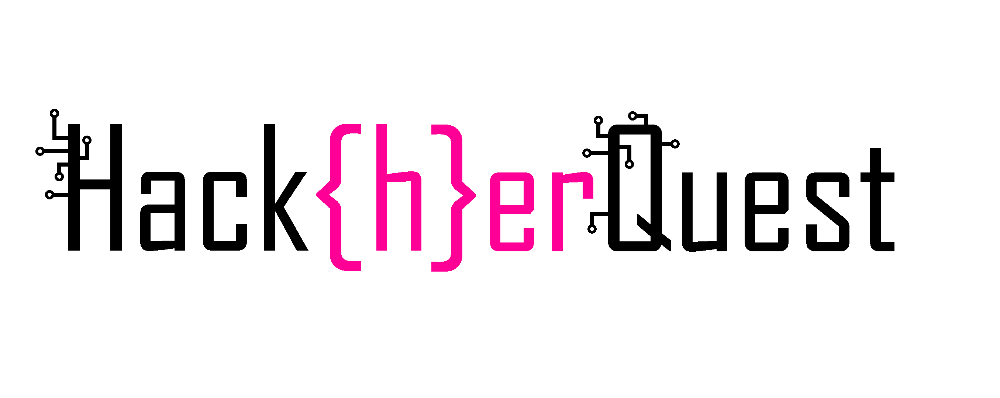
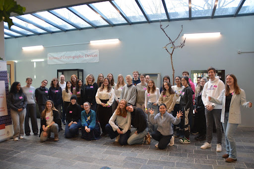

Women's Hacking Competition
Next February the 20th in 2027, we are organizing the 3rd edition of Hack{h}erQuest!
As a cool hacker, you should totally join 😎. We have fun workshops to
enhance your skills and a Capture the Flag (CTF) competition in the afternoon
so that you can show everyone who is the true Mr. Ms. Robot.
The event details are... drumroll please
- What: A Capture The Flag (CTF) competition with workshops
- When: Saturday, 20th of February 2027
- Where: Radboud University, Nijmegen, The Netherlands
- Who: Students who identify as female (all backgrounds and skill levels)
- Sign-ups open on January 9th, 2027
Please use the button below to register for the waiting list. You will receive a notification by the end of December that you can register for HackherQuest. The same link can also be used to submit a workshop or CTF challenge idea. 🙂 In case of the latter will get back to you about your workshop/challenge submission by end of November at the latest.

Workshops
In the previous years we had workshops on amongst others cryptography, mobile security,
and reversing. The workshops for next year will be published in December this year.
Capture The Flag
We have a small CTF competition for smashing the stack & fun. In a CTF, the goal is to
obtain the 'flag' by hacking into a vulnerable system. For example, in web challenges, you may need to exploit a website's reflection
of user-supplied input to obtain the flag. Whereas in cryptography, you have to break the encryption to obtain the flag.
The flag is a string of text that you submit to the competition platform to score points. It usually looks something
like this: FLAG{4N_ExaMplE_fl4G}
Networking
There will opportunities throughout the day to meet fellow hacking-elite witches. Even though we know the computer screen
to be comfortable, we highly recommend asking your peers about their day and whether they have any PHP-containing websites
that were left unupdated recently.
FAQ
Can I sign up for only the workshops or only the CTF?
Yes you aboslutely can! Preference is given to female students who sign up for the entire day.
I identify as a woman, but I am not a student. Can I still sign up?
Definitely, we do not have a strict cut-off. In the previous events we accepted participants from high schoolers
to women looking for a career change. While most participants are college and university students, we welcome
participants of all ages. Preference is given to female students, so keep in mind that most participants
will be roughly between the age of 18-25.
Lunch?
We will try to arrange lunch, but no promises. We accommodate allergies. However, in cases of extreme allergies that
can result in emergency situations, we request that you pack your own lunch.
Language?
The main language throughout the day will be English. There will be Dutch-speaking volunteers available to help
translate when necessary.
I have another question.
Please email us: hackherquest "at" gmail "dot" com
© 2026 Hack{h}erQuest